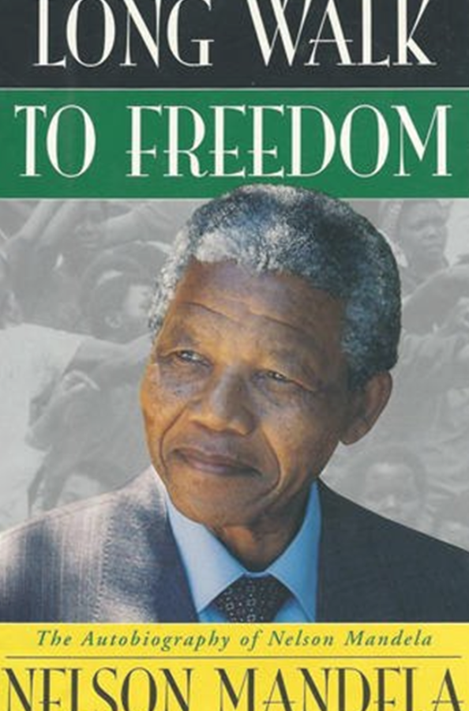
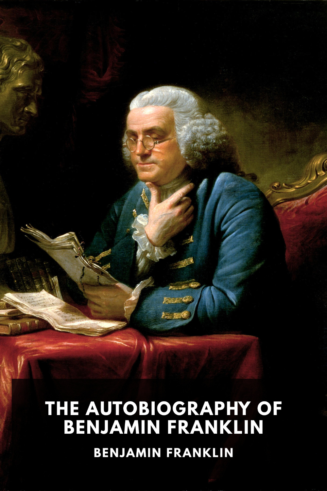
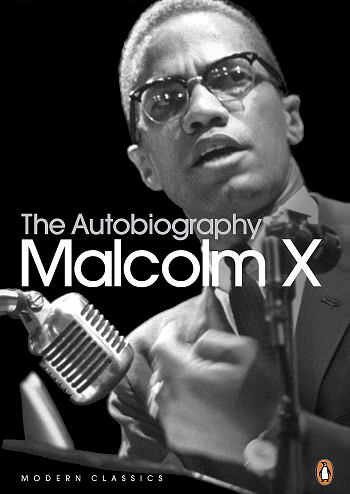

Long Walk to Freedom is an autobiography written by South African President Nelson Mandela, and first published in 1994 by Little Brown & Co. The book profiles his early life, coming of age, education and 27 years in prison.
Becoming is the memoir of former First Lady of the United States Michelle Obama, published in 2018. Described by the author as a deeply personal experience, the book talks about her roots and how she found her voice, as well as her time in the White House
A Promised Land is a memoir by Barack Obama, the 44th President of the United States from 2009 to 2017.
The Autobiography of Benjamin Franklin is the traditional name for the unfinished record of his own life written by Benjamin Franklin from 1771 to 1790
The Autobiography of Malcolm X was published in 1965, the result of a collaboration between human rights activist Malcolm X and journalist Alex Haley. Haley coauthored the autobiography based on a series of in-depth interviews he conducted between 1963 and Malcolm X's 1965 assassination.